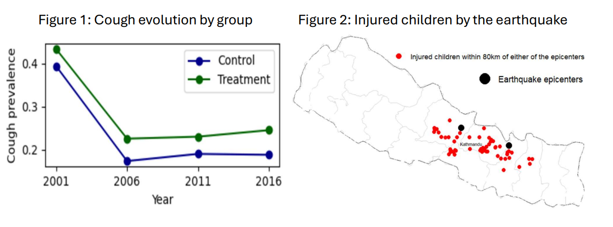

About the project
For the dissertation of my first year in the Master’s program, I inquired about the consequences that the 2015 Gorkha earthquake in Nepal had on children health, and more specifically, on cough prevalence. Nepal is an underdeveloped country where many children still do not have access to decent and dignified living conditions, while earthquakes can aggravate these issues. I was highly motivated to conduct research on this topic and to apply the econometric tools I had recently acquired in the Master.
Data cleaning, management, and analysis were major parts of the project. I worked with DHS (Demographic and Health Surveys) data files, using RStudio and Stata as the main statistical software. The literature review and writing of the paper completed the task. Below you can find a summary of the study framework, the data and methodology employed, and the main findings of the study, which have been summarized from the sixty pages I originally wrote.
1. Research Statement and Study Framework
Earthquakes, being one of the most devastating natural phenomena on Earth, can cause great damage to human health, fostering, in addition to numerous emotional damages, the emergence of diseases. Among them, cough can reduce the quality of life of those who suffer from it, and its frequency in the population may increase after an earthquake, given the resulting dust and pollution, the loss of economic means and the worsening of the quality and quantity of clinical services available, among others. Children under five represent a group of individuals in society who are particularly susceptible to diseases, while their physical and emotional well-being is essential for their development as individuals. The analysis seeks to identify the extent of damage caused, in terms of prevalence of childhood coughing, by the 2015 Nepal Gorkha earthquake.
2. Data
In the study, Demographic and Health Surveys data sets are utilized, a set of nationally representative surveys that collect information on health and demographics in developing countries. Conducted by ICF International and funded primarily by the United States Agency for International Development (USAID), these surveys address topics such as infant mortality, nutrition, reproductive health, and family planning, providing detailed and internationally comparable information. DHS contain several data files for different family members, such as woman, man, children, and households. In the analysis, children and households’ files regarding the country of Nepal for the years 2011 (5,038 observations) and 2016 (5,306 observations) are managed. Additionally, geographic coordinates of each surveyed household were required to compute distances to the earthquake’s epicenters, a key aspect of the research. Geospatial data have also been included to specify control variables in the model.
3. Econometric methodology
The Difference-in-Differences is employed as empirical strategy, an econometric technique used to estimate the causal effect of an intervention or policy by comparing changes in outcomes over time between a treatment group, made up of units who receive the intervention, and a control group that serves as counterfactual for treated individuals (i.e. what would have happened to the treatment group in the absence of the intervention). In this case, the earthquake is interpreted as the intervention. Therefore, we consider that individuals under the treatment are children living in areas close to epicentres, whereas the control set is composed of children who live in remote areas. I have measured the impact on cough prevalence considering as treated the children living within a wide range of kilometres of either of the two epicenters (Gorkha district on 15 April, 7,8 magnitude; and Dolakha district, on 12 may, 7,3 magnitude), with the remaining area of the country as control units, the main results of which will be shown below. The mathematical equation is presented next:
Yit = α + d = α + β1𝑇𝑟𝑒𝑎𝑡𝑚𝑒𝑛𝑡𝑖 + β2ğ‘ƒğ‘œğ‘ ğ‘¡ğ‘¡ + β3 (Treatment ∗ Post) 𝑖𝑡 + β4X𝑖𝑡 + β5D𝑖𝑡
Where 𑌠reflects the outcome of interest (cough prevalence) for individual ğ‘– at time ğ‘¡; α is a constant; β the coefficient of each correspondent variable; ğ‘‡ğ‘Ÿğ‘’ğ‘ğ‘¡ğ‘šğ‘’ğ‘›ğ‘¡ indicates whether the child belongs to the treatment area (1 if that is the case, 0 otherwise); and ğ‘ƒğ‘œğ‘ ğ‘¡ takes the value 1 if individuals belong to the post-earthquake group, 0 if not. X corresponds to a set of control variables and D represents region fixed effects. Finally, ϵ is the error term.
4. Results
Findings have demonstrated a significant impact up to a distance of 80 kilometers. Table 1 presents the estimates obtained from the above equation considering this distance range. β3 , the coefficient corresponding to the variable Treatment*After, is the DiD estimator which measures the causal effect of the treatment. Its significance at the 10% threshold indicates a significant difference, over the two periods analyzed, in the cough rate in the areas affected by the earthquake relative to non-affected regions. The positiveness of the sign indicates that being within 80 kilometers in the post-treatment group increases the likelihood of coughing compared to the remaining areas.
Figure 1 shows the evolution of cough prevalence in both treatment and control groups from the year 2001. We can observe how the cough incidence index, measured from 0 to 1 as a proportion of the sample analyzed, has decreased for both groups in the ten years prior to the earthquake, although it increased slowly in 2011 relative to 2006. After the shock in 2015, the proportion of children suffering from the disease goes up, even if not in a very pronounced way, for treated children. The control region, on the contrary, slightly lowers its cough incidence. The groups compared do not perfectly exhibit parallel trends during the pre-earthquake period, although they are high similar. Even though covariates have been included in the model, possibly they would not have followed an exactly parallel evolution in the absence of treatment, and this could represent some source of little bias in the results. Figure 2 exhibits a map of Nepal showing the two major epicenters as well as the households surveyed who have been found to be injured by the earthquake.

5. Conclusion
In conclusion, the study has analyzed the impact that the 2015 Gorkha earthquake of Nepal had on the prevalence of cough in children under five. For that, groups close to epicenters have been compared to the remaining regions of the country over time. Results have revealed an increase in the rate of the disease in areas within a circle of up to 80 kilometers of any of the two major epicenters. Given the frequency of earthquakes in Nepal and its low buildings construction quality, it is recommended to invest in resistant material to these hazards. Likewise, the importance of counting with health services and qualified professionals after such an event is highlighted. Children are the future of society, and their care is crucial for their development and happiness.